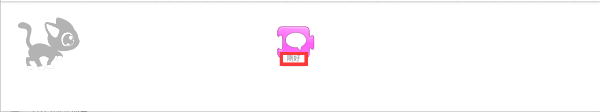
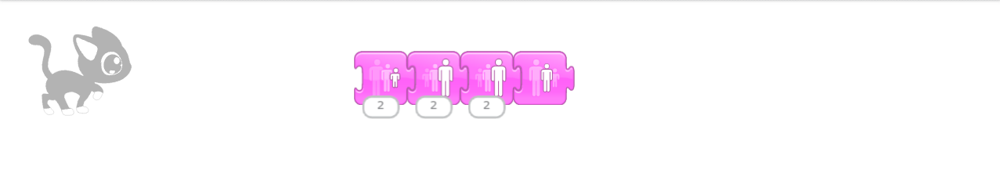

第七课
现在来介绍粉红色积木的功能。
点击一下从左向右第二个积木，在右侧会出现五个粉红色积木。
第一个语言积木，可以让角色说话。
现将语言积木拖到空白区域，点击积木下面的“hi”就可以设定角色要说的话。

第二个是放大积木，可以把角色放大。
第三个是缩小积木，可以把角色缩小。
第四个是恢复积木，可以把角色恢复到原来的大小。
组合成如图积木：

点击积木后，角色会先变小，再变大，最后恢复成原来的大小。